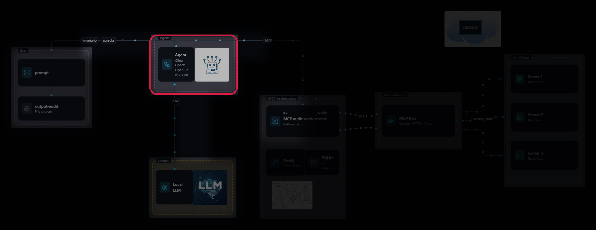

Contigo
Por la izquierda entran el inventario y la consola. Escribes el encargo, lees la salida de la auditoría y el agente lee y escribe ficheros en tu máquina.
Fase 2

El agente está en medio y tiene tres conversaciones. Las tres salen dibujadas en la figura: hacia la consola, hacia el modelo y hacia los MCP.
Por la izquierda entran el inventario y la consola. Escribes el encargo, lees la salida de la auditoría y el agente lee y escribe ficheros en tu máquina.
Por abajo sale la línea LLM hasta LocalAI. El agente pregunta y LocalAI contesta con el modelo. El modelo vive en LocalAI. El agente lo llama.
Por la derecha sale la línea MCP hasta el orquestador. El agente pide el estado y el siguiente paso. El camino hasta los servidores lo recorren los MCP.
El objetivo de la instalación es un agente conectado al LLM, con ejecución en el sistema operativo, interacción con los MCPs, y lectura y escritura del sistema de ficheros.
El producto admite varias opciones. Unas cuantas ya están probadas y quedan aquí como ejemplo.
El instalador está en cli/install del repositorio. Se lanza desde esa carpeta. LOCALAI_URL es la de esta máquina, http://127.0.0.1:8080.
Extensión del editor. Habla con LocalAI por la API de chat. El instalador escribe el proveedor; la extensión se instala en el editor.
Paquete cline 3.0.46. Habla con LocalAI por la API de chat. El estado queda en su propio prefijo.
El vídeo de instalación se añadirá aquí.
Paquete openclaw. El modelo va por openai-completions, directo a LocalAI.
El vídeo de instalación se añadirá aquí.
Paquete @openai/codex. Con LocalAI usa un proxy en 127.0.0.1:8082 que aplana las tools MCP de la API Responses.
El vídeo de instalación se añadirá aquí.